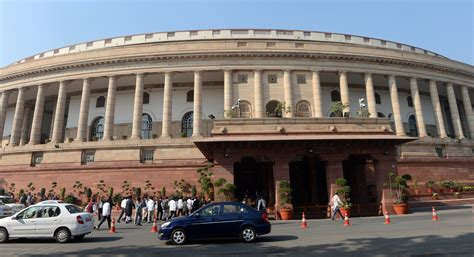

No, That’s Not How You Say It
A short personal history of Politics

Politics (from Greek: Πολιτικά, politiká, 'affairs of the cities') is the set of activities that are associated with making decisions in groups, or other forms of power relations among individuals, such as the distribution of resources or status. The branch of social science that studies politics and government is referred to as political science.
It may be used positively in the context of a "political solution" which is compromising and nonviolent,[1] or descriptively as "the art or science of government", but also often carries a negative connotation.[2] The concept has been defined in various ways, and different approaches have fundamentally differing views on whether it should be used extensively or limitedly, empirically or normatively, and on whether conflict or co-operation is more essential to it.
A variety of methods are deployed in politics, which include promoting one's own political views among people, negotiation with other political subjects, making laws, and exercising force, including warfare against adversaries.[3][4][5][6][7] Politics is exercised on a wide range of social levels, from clans and tribes of traditional societies, through modern local governments, companies and institutions up to sovereign states, to the international level.
In modern nation states, people often form political parties to represent their ideas. Members of a party often agree to take the same position on many issues and agree to support the same changes to law and the same leaders. An election is usually a competition between different parties.
A political system is a framework which defines acceptable political methods within a society. The history of political thought can be traced back to early antiquity, with seminal works such as Plato's Republic and Aristotle's Politics in the West, and Confucius's political manuscripts and Chanakya's Arthashastra in the East.
Politics of India works within the framework of the country's Constitution. India is a parliamentary democratic secular republic in which the president of India is the head of state & first citizen of India and the prime minister of India is the head of government. It is based on the federal structure of government, although the word is not used in the Constitution itself. India follows the dual polity system, i.e. federal in nature, that consists of the central authority at the centre and states at the periphery.
here are 543 members in the Lok Sabha, who are elected using plurality voting (first past the post) system from 543 single-member constituencies. There are 245 members in the Rajya Sabha, out of which 233 are elected through indirect elections by single transferable vote by the members of the state legislative assemblies; 12 other members are elected/nominated by the President of India.
Every political party in India, whether a national or regional/state party, must have a symbol and must be registered with the Election Commission of India. Symbols are used in the Indian political system to identify political parties in part so that illiterate people can vote by recognizing the party symbols.